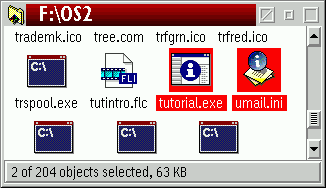

Klasse: XFolder
XFolder bietet die sch”nsten und flexibelsten Statusleisten f�r Ordner
(meiner Meinung nach jedenfalls).
Diese lassen sich sehr frei
auf der Seite "Statuszeilen" des
neuen Objekts "Workplace Shell" konfigurieren und k”nnen auáerdem
auch individuell f�r jeden Ordner an- und ausgeschaltet werden.
Hinweis: Ordner-Statuszeilen sind standardm„áig ausgeschaltet, um
Schwierigkeiten mit vorhandener Software zu vermeiden, die Ordnern bereits Statuszeilen hinzuf�gt.
Rufen Sie das
Objekt "Workplace Shell" auf, um die XFolder-Statuszeilen
anzuschalten; stellen Sie dabei allerdings sicher, daá Sie entsprechende Funktionen anderer
Software zuerst deaktivieren, oder es kann zu unvorhersehbaren Problemen kommen.

Statuszeilen arbeiten in drei Modi, d.h. abh„ngig davon, wie viele Objekte
momentan im Ordner ausgew„hlt sind, werden unterschiedliche Informationen angezeigt:
- "Kein-Objekt-Modus": dieser greift, wenn gar kein Objekt ausgew„hlt ist.
Standardm„áig werden die Gesamtzahl der Objekte im Ordner und ihre Gesamtgr”áe
sowie der freie Speicherplatz auf dem Laufwerk des Ordners angezeigt.
- "Ein-Objekt-Modus": dieser greift, wenn genau ein Objekt ausgew„hlt ist.
Abh„ngig von der Klasse des Objekts werden verschiedene Informationen angezeigt.
Beispielsweise werden bei Ordnern und Dateidateien Informationen des Dateisystems
angezeigt (echter Name, Klasse, GrӇe, Datum und Zeit).
- "Viele-Objekte-Modus": dieser greift, wenn mehr als ein Objekt ausgew„hlt ist.
Standardm„áig werden die Anzahl der ausgew„hlten Elemente, die Gesamtanzahl der Objekte im
Ordner und die kumulierten Dateigr”áen der ausgew„hlten Objekte angezeigt (wie aus dem obigen
Bildschirmphoto ersichtlich).
F�r jeden dieser drei Modi l„át sich frei konfigurieren, was jeweils in den Statuszeilen
angezeigt werden soll. Dies wird auf der Seite
"Statuszeilen konfigurieren" im Detail erkl„rt.